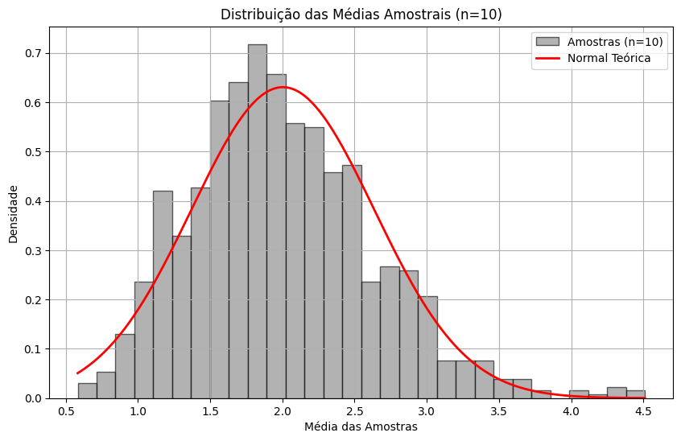
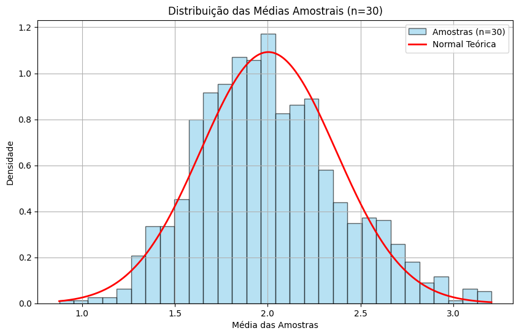
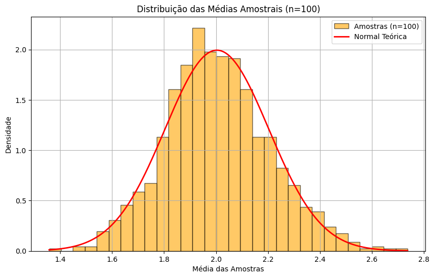
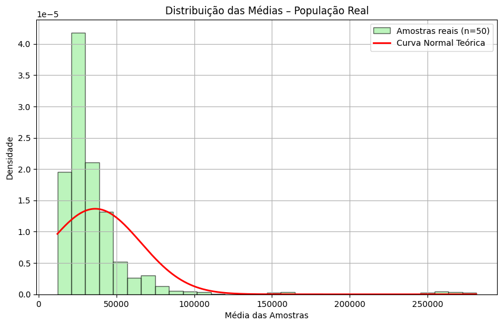

Conteúdo atualizado da quarta aula do curso. Exploramos análises estatísticas com visualizações e exemplos práticos.
Aula 4 – Continuacao de Teorema do Limite Central
Nesta aula prática, vamos aprofundar o Teorema do Limite Central (TLC), simular sua aplicação e utilizá-lo com dados reais da população dos municípios brasileiros.
Parte 1 – Revisão: Simulação do Teorema do Limite Central
Código e saída correspondente:
import numpy as np
import matplotlib.pyplot as plt
from scipy.stats import norm
# Criando uma população não normal (exponencial)
pop = np.random.exponential(scale=2.0, size=100000)
# Função para calcular médias amostrais
def gerar_medias(pop, n, k):
return [np.mean(np.random.choice(pop, size=n)) for _ in range(k)]
# Gerar amostras de diferentes tamanhos
medias_10 = gerar_medias(pop, 10, 1000)
medias_30 = gerar_medias(pop, 30, 1000)
medias_100 = gerar_medias(pop, 100, 1000)
# Visualização
for n, amostras, cor in [(10, medias_10, 'gray'), (30, medias_30, 'skyblue'), (100, medias_100, 'orange')]:
plt.figure(figsize=(10, 6))
plt.hist(amostras, bins=30, density=True, color=cor, alpha=0.6, edgecolor='black', label=f'Amostras (n={n})')
x = np.linspace(min(amostras), max(amostras), 1000)
y = norm.pdf(x, loc=np.mean(pop), scale=np.std(pop)/np.sqrt(n))
plt.plot(x, y, 'r-', linewidth=2, label='Normal Teórica')
plt.title(f'Distribuição das Médias Amostrais (n={n})')
plt.xlabel('Média das Amostras')
plt.ylabel('Densidade')
plt.legend()
plt.grid(True)
plt.show()



Parte 2 – Aplicando o TLC com Dados Reais
Código e saída correspondente:
import pandas as pd
# Carregando os dados reais de população
populacao = pd.read_csv('ipeadata[31-03-2025-03-06].csv', header=1)
populacao = populacao[['Município', '2022']].dropna()
populacao.columns = ['Municipio', 'Populacao']
pop_real = populacao['Populacao'].values
N = 50
# Amostras das populações reais
amostras_real = [np.mean(np.random.choice(pop_real, size=N)) for _ in range(1000)]
# Parâmetros
mu_real = np.mean(pop_real)
sigma_real = np.std(pop_real)
# Histograma com curva normal esperada
plt.figure(figsize=(10, 6))
plt.hist(amostras_real, bins=30, density=True, color='lightgreen', alpha=0.6, edgecolor='black', label='Amostras reais (n=%i)'%N)
x = np.linspace(min(amostras_real), max(amostras_real), 1000)
y = norm.pdf(x, loc=mu_real, scale=sigma_real/np.sqrt(N))
plt.plot(x, y, 'r-', linewidth=2, label='Curva Normal Teórica')
plt.title('Distribuição das Médias – População Real')
plt.xlabel('Média das Amostras')
plt.ylabel('Densidade')
plt.legend()
plt.grid(True)
plt.show()
print(np.mean(pop_real))

36459.7407540395
Qual o tamanho da amostra que levou para convergir? Alguma observacao sobre isso?
Parte 3 – Convergência da Média com Diferentes Distribuições
Nesta parte, vamos observar como a média amostral converge para a média populacional conforme aumentamos o número de amostras, em dois cenários:
Uma distribuição real (população dos municípios)
Uma distribuição assimétrica (exponencial)
Vamos visualizar a **convergência da média acumulada** para entender o efeito do tamanho da amostra.
Código e saída correspondente:
# Amostras da população real
amostras_real = np.random.choice(pop_real, size=1000)
media_real_verdadeira = np.mean(pop_real)
media_real_convergente = [np.mean(np.random.choice(pop_real, size=x)) for x in range(1,10000,10)]
# Amostras da exponencial
media_exp_verdadeira = 36000.0 # média teórica da exponencial
amostras_exponencial = np.random.exponential(scale=media_exp_verdadeira, size=len(pop_real))
print(np.mean(amostras_exponencial))
media_exp_convergente = [np.mean(np.random.choice(amostras_exponencial, size=x)) for x in range(1,10000,10)]#convergencia_da_media(amostras_exponencial)
36329.07470751586
Código e saída correspondente:
# Visualizar convergência
plt.figure(figsize=(12,5))
plt.subplot(1,2,1)
plt.plot(range(1,10000,10),media_real_convergente, label='Média acumulada')
plt.axhline(media_real_verdadeira, color='red', linestyle='--', label='Média real')
plt.title('Convergência da média - População real')
plt.xlabel('Número de observações')
plt.ylabel('Média')
plt.ylim((10000,70000))
plt.legend()
plt.grid(True)
plt.subplot(1,2,2)
plt.plot(range(1,10000,10),media_exp_convergente, label='Média acumulada')
plt.axhline(media_exp_verdadeira, color='red', linestyle='--', label='Média real')
plt.title('Convergência da média - Exponencial')
plt.xlabel('Número de observações')
plt.ylabel('Média')
plt.ylim((10000,70000))
plt.legend()
plt.grid(True)
plt.tight_layout()
plt.show()